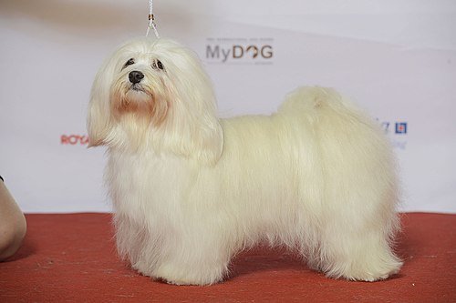
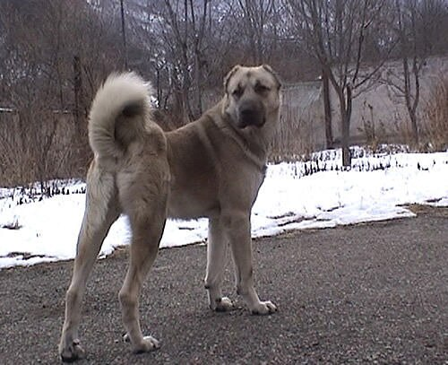

Вернуться назад: Породы кошек.
Посмотреть породы хомячков: Породы хомячков.
Венгерская борзая
Венге́рская борза́я, мадья́р-ага́р (венг. Magyar agár) — порода борзых собак.
Происходит с территорий Венгрии и Трансильвании. Собака предназначается для травильной охоты («по-зрячему») на зайца и оленя,
отличается от большинства борзых выносливостью. Может использоваться в собачьих бегах,
в качестве сторожевой и собаки-компаньона.
Гаванский бишон
Гаванский бишон, или гаванская болонка, или хаванез (исп. bichón habanero), — порода собак группы болонок,
по международной классификации входит в группу 9 «Декоративные собаки и собаки-компаньоны»

Гампр
Гампр (арм. գամփռ) (армянский волкодав) — аборигенная порода собак, ведущая своё происхождение с Армянского нагорья.
